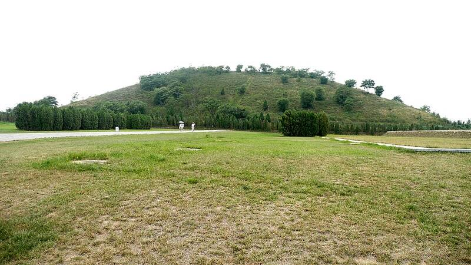

Xi'an pyramids
Shaanxi, China, about 200 BC to AD 200

Flat-topped earthen burial mounds of Han dynasty emperors. After World War II, stories spread of a giant "White Pyramid" spotted by an American pilot. The famous photo turned out to show the Maoling mausoleum, a known tomb. 1
Open in the interactive Watcher
Sources
- Chinese pyramids Wikipedia